纤维丛图解
纤维丛描述一种空间：每一小块都像两个简单空间的乘积，拼成整体时却可能扭转。它回答“局部能做的事，整体能不能做”，也是规范场论、广义相对论和拓扑物态共同的数学语言。莫比乌斯带、球面上的切向量、霍普夫的相扣圆环、磁单极和贝里相位，都可以用这一套语言来讲。
0为什么要研究纤维丛
很多问题在小范围里没有障碍，在大范围里却做不到。球面上每一小块都能把“毛”梳顺，整个球面却一定留下一个旋；地图上每一小块都能画成平面，整个地球却不能不变形地摊平。这类“局部能做、整体做不到”的现象，单靠局部计算看不出来，需要一种语言把局部的样子和局部之间怎样拼接分开记录。纤维丛就是这种语言。
- 能不能拼成整体：局部存在的东西（非零向量场、一组坐标、波函数的相位）能否连续地延伸到整个空间？不能的话，障碍是什么？
- 有多少种拼法：同样的局部，能拼出多少种本质不同的整体？答案常常是一组整数，叫示性类，比如陈数、欧拉数。
- 怎样“平移”：在弯曲或扭转的空间里比较不同地点的量，需要联络。绕一圈回来的偏差（和乐）往往就是能测量的物理效应。
物理学几乎是被动地走进了这门数学。二十世纪的规范场论发现，电磁场、弱力和强力的“势”在数学上正是主丛上的联络，场强是曲率；而带电粒子的波函数是伴随丛的截面。一旦用这套语言，许多原本神秘的整数，比如磁荷的量子化、量子霍尔电导的台阶，都变成了丛的拓扑不变量。杨振宁在 1975 年和陈省身交谈后感慨，物理学家苦苦摸索出来的结构，数学家早已独立地研究清楚了。
所以研究纤维丛有两层意义：在数学里，它是把拓扑（整体的形状）和几何（局部的弯曲）连起来的桥梁；在物理和工程里，它是描述“场”和“相位”最准确的框架，并能预言那些不受细节干扰的精确整数。
1局部一样，整体不同
拿一条纸带，两端直接粘起来，得到圆柱面；扭半圈再粘，得到莫比乌斯带。在两条带子上各剪一小段，你分不出它们：都是“一小段弧 × 一根线段”。区别只在整体，沿中线走一圈回到起点时，横向的那根线段有没有被翻过来。
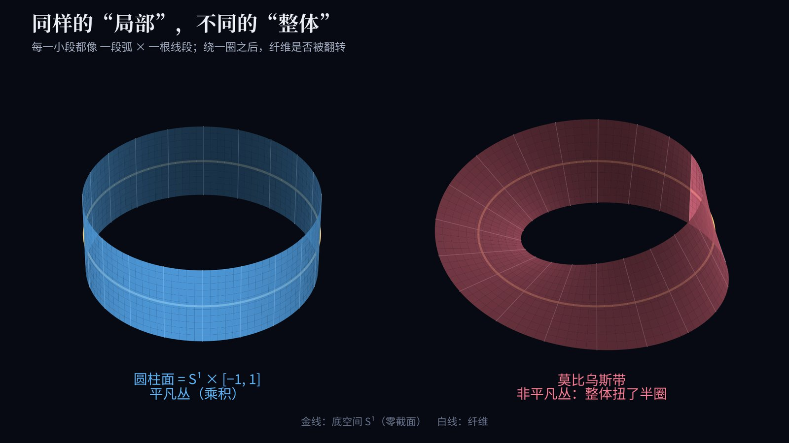
纤维丛就是把这个观察一般化：底空间（这里是圆 S¹）上每个点挂一根纤维（这里是线段），挂法在局部总是“直的”，整体上可以扭。
2定义
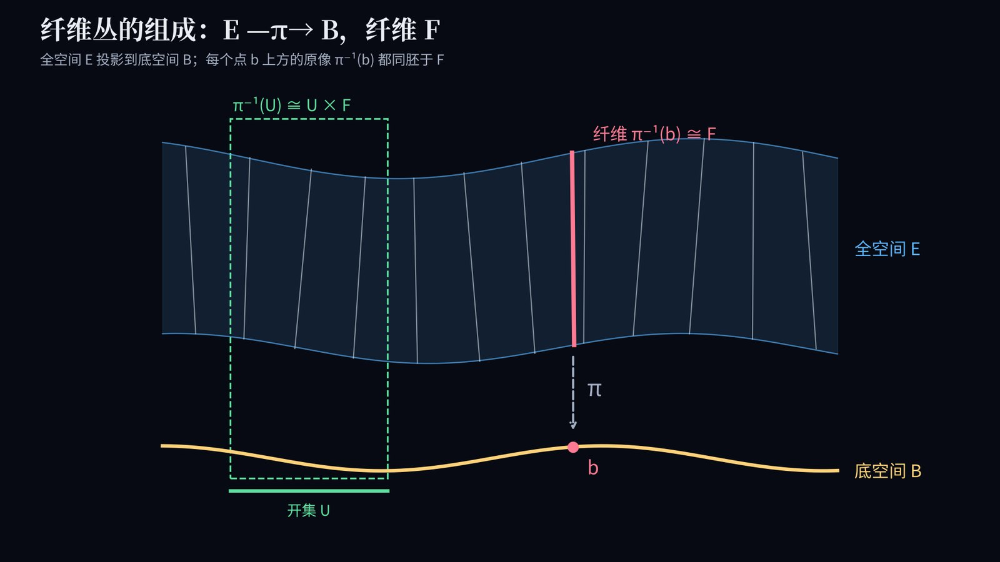
- 全空间 E、底空间 B，以及连续满射 π : E → B；
- 对每个点 b，纤维 π−1(b) 同胚于固定的空间 F；
- 局部平凡性：每点都有邻域 U，使 π−1(U) ≅ U × F，并且这个同胚和投影相容。
第 3 条是关键。它说丛在小范围内没有任何新东西，所有的信息都在“这些小块怎么拼起来”。如果整个 E 能写成 B × F，就叫平凡丛。
3转移函数：扭转记在粘合处
把底空间盖上几块开集 Ui，每块上丛都是乘积。两块重叠的地方，同一根纤维有两种坐标，它们之间差一个变换 gij(b)。这些变换取值的群叫结构群 G。
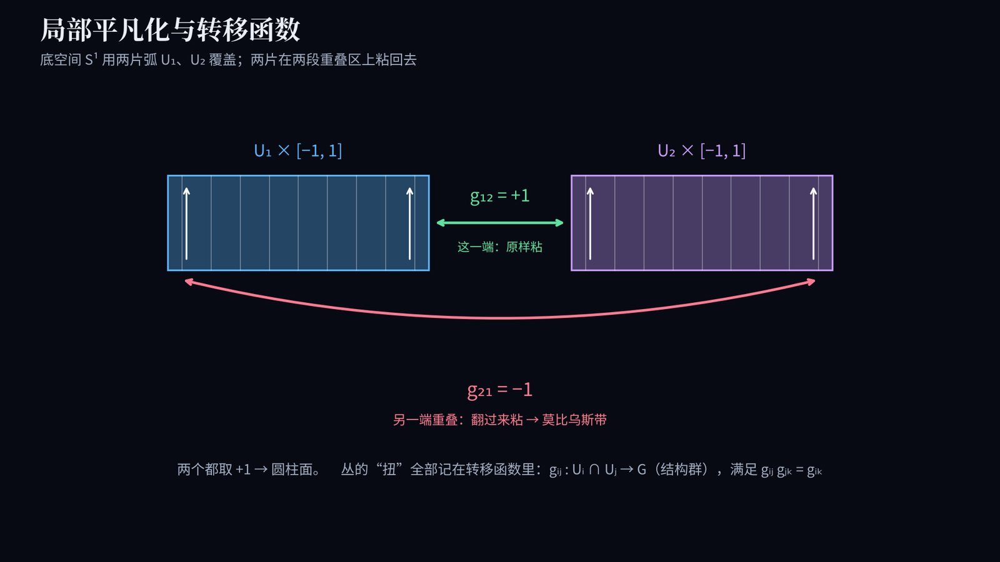
转移函数必须满足相容条件 gij gjk = gik（三块重叠处绕一圈回到原样）。反过来，只要给出一组满足这个条件的函数，就能把乘积小块粘成一个丛。换局部坐标会把 gij 变成 hi−1 gij hj，丛的同构类就是转移函数在这种变换下的等价类。
4截面：在每根纤维上挑一个点
截面是一个连续映射 s : B → E，满足 π ∘ s = id，也就是给每个底空间的点在它头顶的纤维上挑一个点。物理里的“场”，几何上就是某个丛的截面。
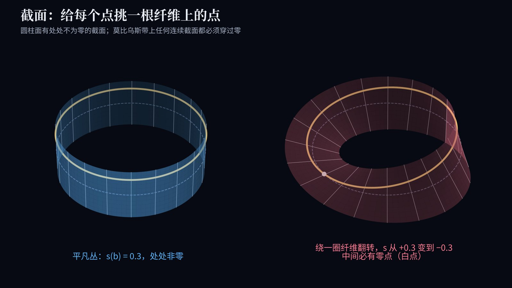
原因很直观：在莫比乌斯带上从 +0.3 出发，绕一圈后纤维被翻转，同一个值变成了 −0.3；连续地从正走到负，中间必须经过零。对线丛（纤维是一维向量空间）来说，平凡 ⇔ 存在处处非零的截面。
5切丛与毛球定理
流形 M 上每点都有一个切空间 TpM，把它们全部收集起来就是切丛 TM，它是最常见的纤维丛。向量场就是切丛的截面。
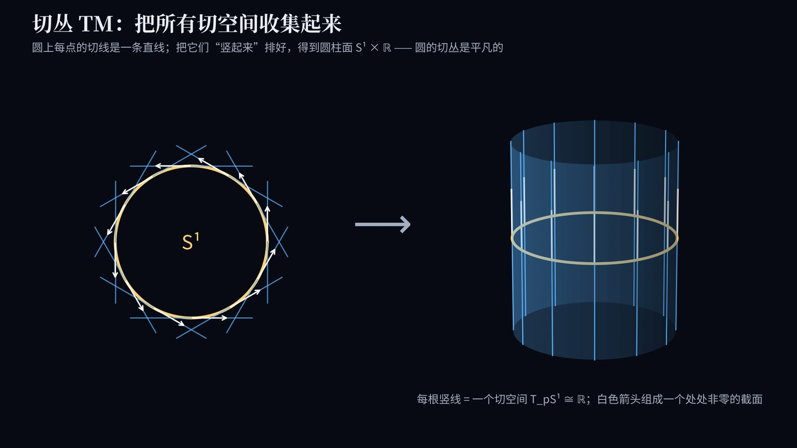
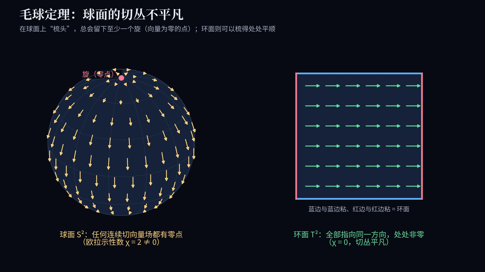
这背后是庞加莱–霍普夫定理：向量场零点的指数之和等于欧拉示性数 χ(M)。球面 χ = 2，所以至少有一个零点；环面 χ = 0，可以没有零点。地球上任何时刻至少有一处水平风速为零，用的就是这个结论。
6纤维的种类
按纤维是什么，纤维丛分成几个大家族。
离散的纤维：覆叠空间
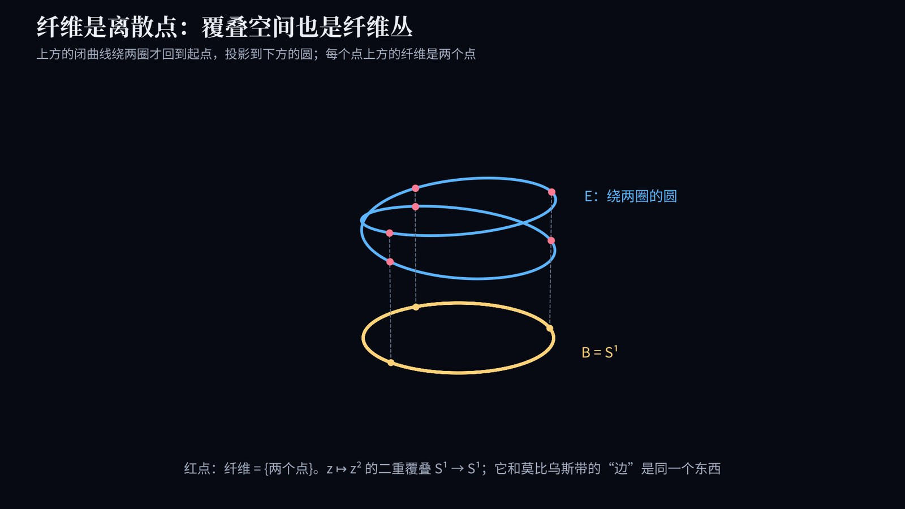
向量空间作纤维：向量丛
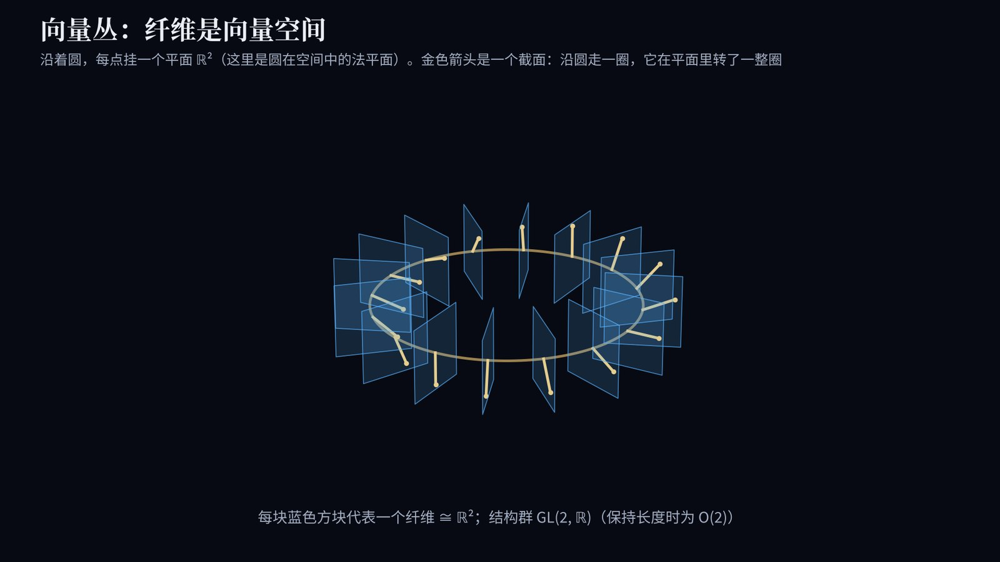
群作纤维：主丛
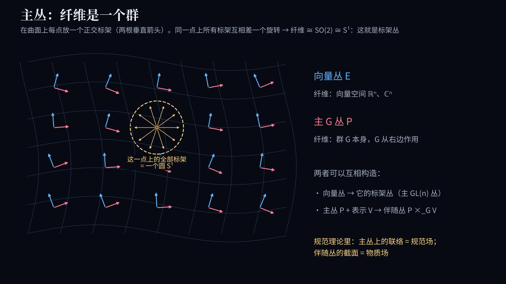
主 G 丛的纤维就是结构群 G 本身，G 在纤维上自由地作用。主丛和向量丛可以互相转换：向量丛的标架组成一个主丛；主丛配上群的一个表示 V，就得到伴随向量丛 P ×G V。规范场论正是在这对关系上搭起来的。
7霍普夫纤维化
1931 年，霍普夫发现三维球面 S³（四维空间里的单位球面）可以被切成无穷多个互不相交的圆，每个圆对应二维球面 S² 上的一个点。写成复数：S³ = {(z₁, z₂) : |z₁|² + |z₂|² = 1}，把 (z₁, z₂) 和 (eiθz₁, eiθz₂) 看成同一点，就得到 S²。
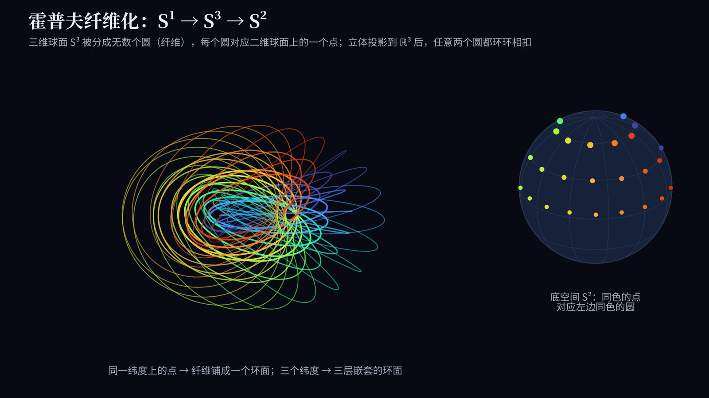
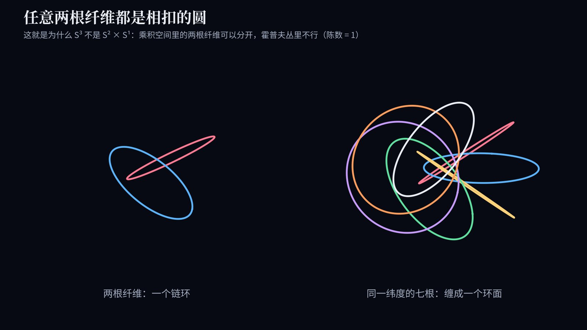
霍普夫丛是一个主 U(1) 丛，也是第一个被发现的“从高维球面到低维球面的本质映射”，开启了同伦群 π₃(S²) ≅ ℤ 的研究。它在物理里反复出现：量子比特的态空间（布洛赫球）、单位强度的磁单极、贝里相位，背后都是它。
8联络、曲率与和乐
丛本身只规定了“竖直方向”（沿纤维），没有规定在不同纤维之间怎样“平移”。联络补上这一点：它在每点选定一个水平方向。有了水平方向，底空间里的一条路径就能唯一地提升成全空间里的一条水平路径，这叫平行移动。
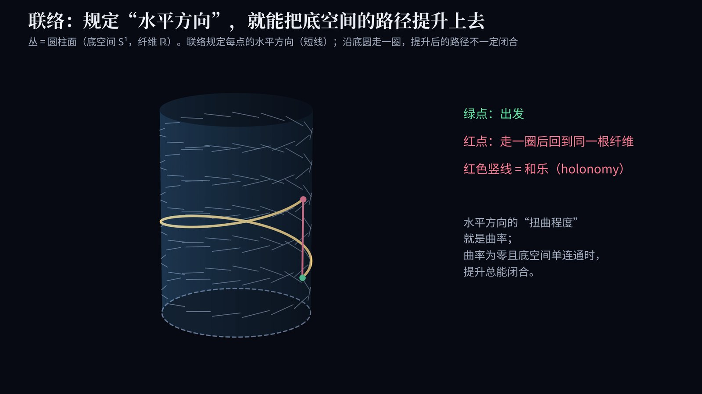
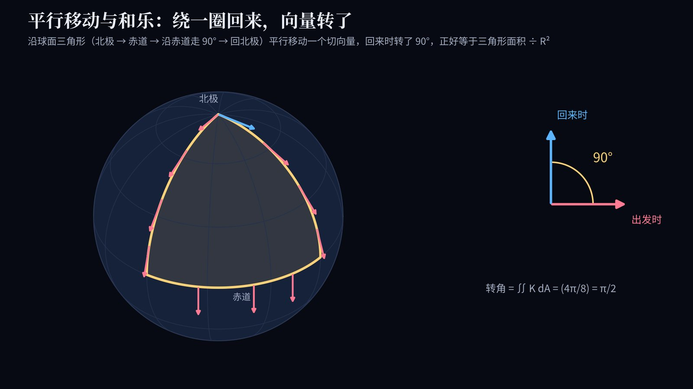
曲率衡量水平方向的“不可积”程度：沿一个无穷小回路的和乐，就是那里的曲率。高斯–博内定理把两者连起来：转角 = ∬ K dA。傅科摆每天转过的角度也来自这个公式，摆面跟着地球自转，在球面上被平行移动。
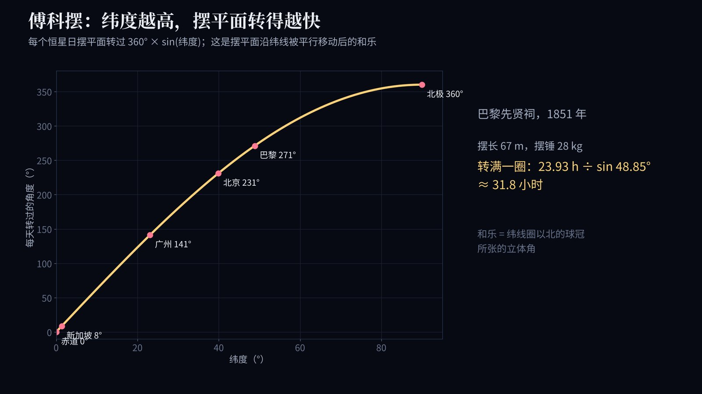
形状空间里的和乐
同样的结构出现在机械和动物身上。把“形状”当作底空间、“位置或朝向”当作纤维，形状变化就是底空间里的路径，联络由力学约束（车轮不能侧滑、角动量守恒）给出。形状走一个闭合回路，位置或朝向发生和乐。
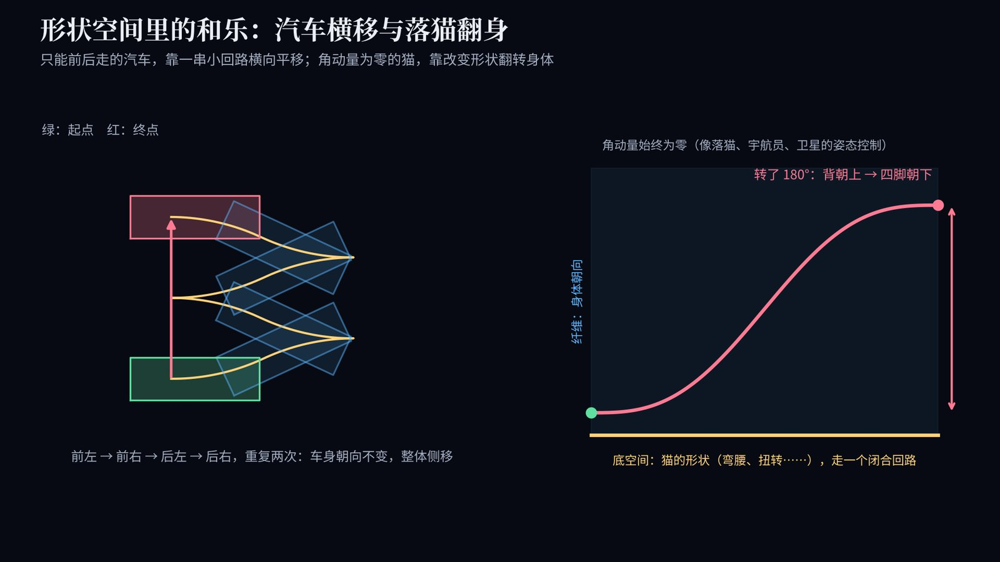
曲率为零时仍然可以有和乐，只要底空间有“洞”（不单连通）。下面的阿哈罗诺夫–玻姆效应就是这种情况。
9示性类：用数字给丛分类
很多丛可以用一个整数来区分。最简单的例子是球面上的复线丛：北半球、南半球上各是乘积，沿赤道用一个函数 g(φ) = einφ 粘起来。g 在单位圆上绕的圈数 n 不能连续地改变，它就是第一陈数 c₁。
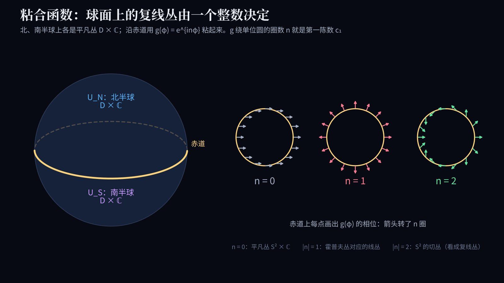
陈数也能从曲率算出来：c₁ = (1/2π) ∬ F。这里有一件了不起的事：曲率是局部的、依赖于联络的选择，而它在整个流形上的积分却是一个整数，只和丛的拓扑有关。欧拉示性数、庞特里亚金类、施蒂费尔–惠特尼类都属于这一类不变量，统称示性类。
10物理里的纤维丛
1975 年，吴大峻与杨振宁指出，规范场论里的概念和纤维丛的概念一一对应，并列了一张对照表。电磁学是 U(1) 主丛上的联络，弱力与强力分别对应 SU(2) 和 SU(3)。
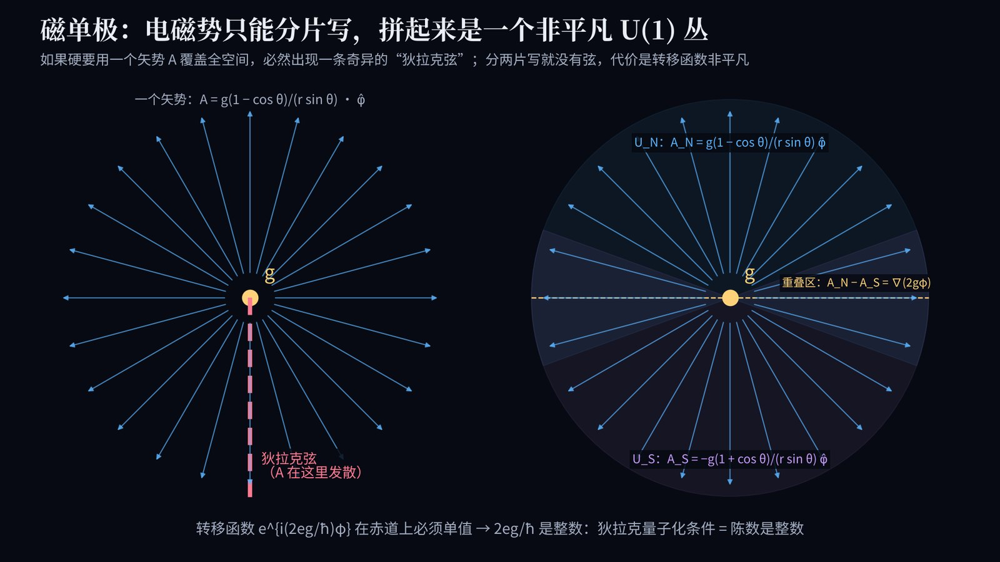
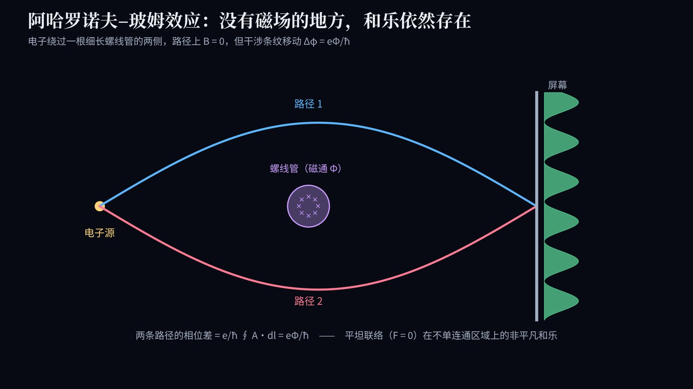
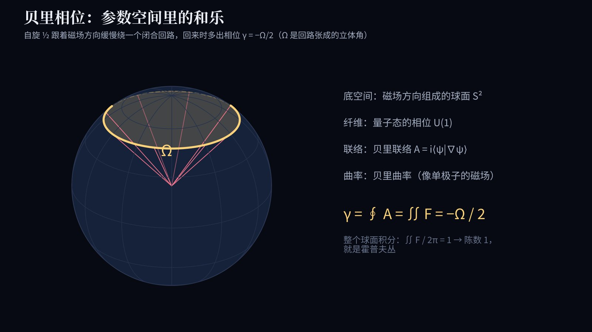
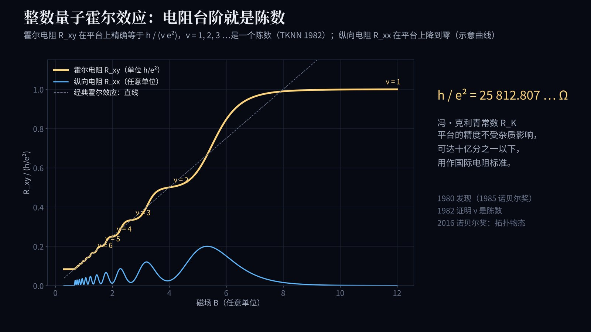
富田章与乔瑞宇在 1986 年把单模光纤绕成螺旋，测到光的偏振面转过的角度正好等于光纤切向在球面上围出的立体角，这是光子的贝里相位。外村彰在同一年用电子全息和超导屏蔽的环形磁体，干净地证实了 AB 效应。
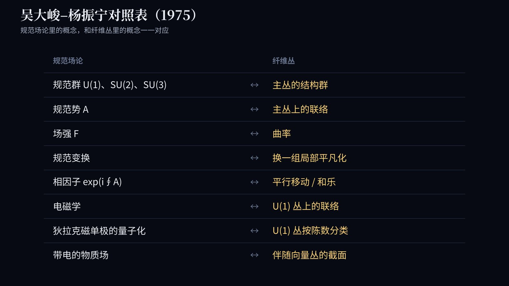
| 规范场论 | 纤维丛 |
|---|---|
| 规范群（U(1)、SU(2)、SU(3)） | 主丛的结构群 |
| 规范势 Aμ | 主丛上的联络 |
| 场强 Fμν | 曲率 |
| 规范变换 | 换局部平凡化（坐标） |
| 相因子 ei∮A | 平行移动 / 和乐 |
| 带电的物质场 | 伴随向量丛的截面 |
| 狄拉克磁单极的量子化 | U(1) 丛按第一陈数分类 |
| 瞬子数、拓扑荷 | 第二陈数等示性类 |
11有什么用
纤维丛很少作为“工具”直接出现在计算里，它更像一副眼镜：戴上以后，许多看似无关的现象显出同一个结构，而且能直接告诉你哪些量是精确的整数、哪些障碍无法绕开。
| 领域 | 用到的概念 | 例子 |
|---|---|---|
| 粒子物理 | 主丛上的联络与曲率 | 标准模型 = SU(3) × SU(2) × U(1) 规范场；瞬子、磁单极按陈数分类 |
| 广义相对论 | 标架丛上的联络 | 引力是时空的列维-奇维塔联络，弯曲是它的曲率；陀螺仪在轨道上的进动是和乐（引力探测器 B 测到的测地线进动） |
| 凝聚态与计量 | 贝里联络、陈数 | 量子霍尔电阻标准 h/e²；拓扑绝缘体；能带的贝里曲率决定反常霍尔效应 |
| 量子信息与光学 | 霍普夫丛、几何相位 | 量子比特的布洛赫球；用几何相位做对噪声不敏感的量子门；螺旋光纤里的偏振旋转 |
| 机器人与航天 | 形状空间上的联络、和乐 | 非完整约束的运动规划（汽车泊车、蛇形机器人）；卫星和宇航员用肢体动作调整姿态 |
| 计算机图形学 | 切丛的截面、离散联络 | 在曲面上设计方向场、交叉场来铺四边形网格和纹理；奇点个数受欧拉示性数约束 |
| 气象与地球科学 | 球面切丛的不平凡性 | 任何时刻地表至少有一处水平风速为零；傅科摆演示地球自转 |
| 纯数学 | 示性类、指标定理 | 阿蒂亚–辛格指标定理把微分方程解的个数和示性类联系起来；高斯–博内–陈定理 |
12时间线
| 年份 | 事件 |
|---|---|
| 1851 | 傅科在巴黎先贤祠悬挂 67 米长的摆，演示地球自转 |
| 1912 | 布劳威尔证明偶数维球面上的切向量场必有零点（毛球定理） |
| 1931 | 霍普夫发现 S³ → S² 的纤维化；狄拉克提出磁单极与电荷量子化 |
| 1933–1935 | 塞弗特研究“纤维空间”，惠特尼提出球丛的概念 |
| 1946 | 陈省身定义陈类 |
| 1950–1951 | 埃雷斯曼定义丛上的联络；斯廷罗德出版《纤维丛的拓扑》 |
| 1954 | 杨振宁与米尔斯提出非阿贝尔规范场论 |
| 1959 | 阿哈罗诺夫与玻姆提出 AB 效应 |
| 1963 | 阿蒂亚与辛格宣布指标定理 |
| 1975 | 吴大峻与杨振宁给出规范场与纤维丛的对照 |
| 1980–1982 | 冯·克利青发现量子霍尔效应；索利斯等人（TKNN）证明霍尔电导是陈数 |
| 1984 | 贝里提出几何相位 |
| 1986 | 富田与乔在螺旋光纤中测到光子的贝里相位；外村彰证实 AB 效应 |
| 2016 | 索利斯、霍尔丹、科斯特利茨因拓扑相变与拓扑物态获诺贝尔物理学奖 |
13概念地图与术语
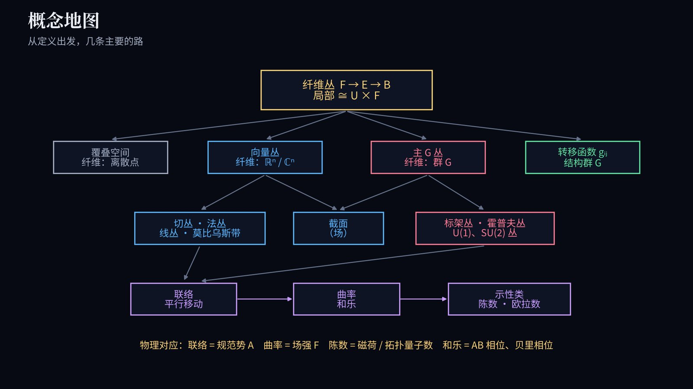
| 术语 | 英文 | 一句话 |
|---|---|---|
| 全空间 / 底空间 / 纤维 | total space / base / fiber | E、B、F，投影 π : E → B |
| 局部平凡化 | local trivialization | 小块上 π−1(U) ≅ U × F |
| 转移函数 / 结构群 | transition function / structure group | 重叠区的坐标变换，取值在群 G |
| 截面 | section | 每点在纤维上挑一个点；即“场” |
| 向量丛 / 线丛 | vector / line bundle | 纤维是向量空间 / 一维向量空间 |
| 主丛 | principal bundle | 纤维是结构群本身 |
| 拉回 | pullback | 沿映射 f : B′ → B 把丛搬到 B′ 上 |
| 联络 / 平行移动 | connection / parallel transport | 规定水平方向，把路径提升上去 |
| 曲率 / 和乐 | curvature / holonomy | 小回路 / 闭路径提升后的偏差 |
| 示性类 / 陈数 | characteristic class / Chern number | 由曲率积分得到的整数不变量 |
14延伸阅读
- M. Nakahara, Geometry, Topology and Physics：面向物理学生，第 9–11 章讲纤维丛、联络与示性类。
- T. Frankel, The Geometry of Physics：图多，从电磁学和广义相对论讲到规范场。
- L. W. Tu, Differential Geometry: Connections, Curvature, and Characteristic Classes：数学系的入门教材。
- N. Steenrod, The Topology of Fibre Bundles（1951）与 D. Husemoller, Fibre Bundles：拓扑方向的经典。
- J. Milnor, J. Stasheff, Characteristic Classes：示性类的标准参考。
- T. T. Wu, C. N. Yang, “Concept of nonintegrable phase factors and global formulation of gauge fields”, Phys. Rev. D 12, 3845 (1975)：规范场与纤维丛对照表的出处。